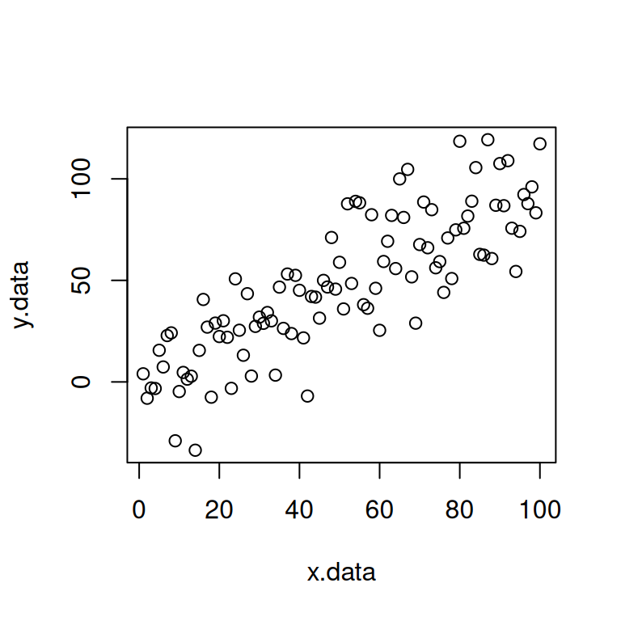
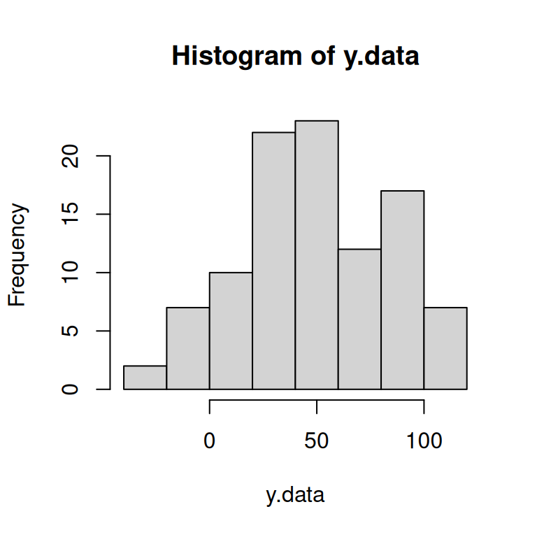
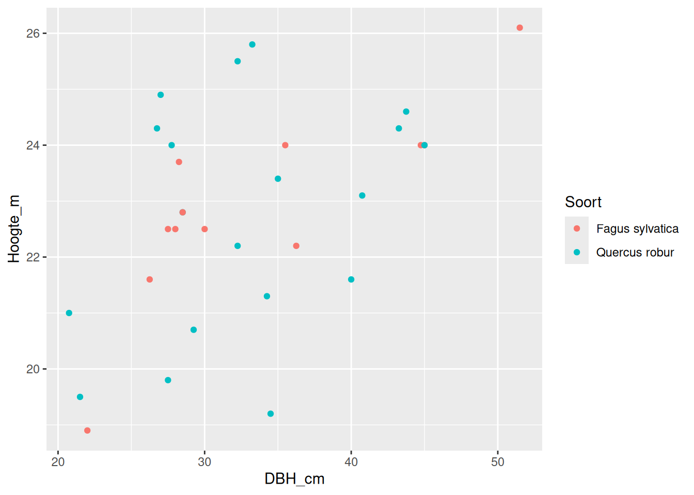
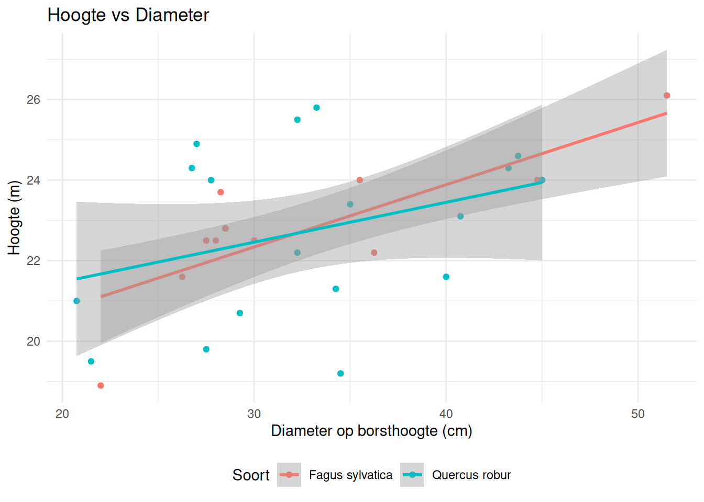

?sum()Inventaristatie - Tutorial ‘introductie tot R’
R is een programmeertaal en omgeving voor data analyse en grafische weergave. Het is een open source implementatie van de S taal, die o.a. de basis vormt voor de S-PLUS software. Een heel aantal statistische analysetechnieken wordt standaard in de basisomgeving van R aangeboden, maar de meeste worden beschikbaar gesteld als extra packages op het CRAN netwerk (http://cran.r-project.org/). Er is een belangrijk verschil in filosofie tussen R (en S) en andere software die courant gebruikt wordt voor data analyse. In R worden analyses uitgevoerd in opeenvolgende stappen waarbij intermediaire resultaten bewaard worden als objecten. Waar andere systemen zoals SAS en SPSS direct relatief veel output tonen in tabellen en figuren, zal R minimale output tonen en de resultaten opslaan in nieuwe objecten. Die objecten kunnen dan verder gebruik worden in andere R functies.
Deze introductie is zeer beknopt en gebaseerd op de veel uitgebreidere documentatie op het CRAN netwerk: http://cran.r-project.org/doc/manuals/R-intro.html
1 De interface
1.1 RStudio
In deze cursus maken we gebruik van RStudio, een vrij beschikbare integrated development environment (IDE) voor R. Installeer een recente versie van RStudio op https://www.rstudio.com/.
Na openen van RStudio zie je in de R Console een koptekst met o.a. basisinfo over de gebruikte versie. Daarna volgt een blanco lijn voorafgegaan door het > symbool. Dit symbool wordt een prompt genoemd en is R taal voor ‘Wat nu?’. Hier worden commando’s getypt, gevolgd door ENTER. Het kan gebeuren dat er links een + staat, wat betekent dat het commando dat getypt werd onvolledig is (bv. haakjes vergeten). Hulp bij functies is gemakkelijk online te vinden en kan ook direct opgeroepen worden in R via
Dit commando geeft je info over de functie sum, een functie die de som geeft van alle elementen in een vector.
RStudio biedt ook een code editor met onder andere opmaak van je syntax en auto-complete van code. In deze editor kan je scripts ontwikkelen. Een script laat toe meerdere lijnen code ineens te typen en uit te voeren. Met het toevoegen van extra tekst maak je de code leesbaar voor jezelf en anderen. Groot voordeel van de editor t.o.v. de commandolijn is dat je scripts kan opslaan. Zo kan je er later terug mee aan de slag gaan of delen met anderen. Open een nieuw script File > New file > R script en typ onderstaande code. Om het script uit te voeren, selecteer je alle code en druk Ctrl+Enter. De lijnen worden naar de console getransfereerd en uitgevoerd.
# Tekst na een hashtag wordt niet als code uitgevoerd
x <- c(3, 5, 7)
mean(x)[1] 5Opmerking: de grijze box toont de code die je zelf typt na de prompt, de witte box toont de output die in de Console zal verschijnen
1.2 R markdown
In deze cursus maken we gebruik van R markdown. Deze markdowns laten toe tekst, code (chunks) en resultaten in een enkel document te ontwikkelen. Het verschil met een script is dat (1) de tekst opgemaakt kan worden (en niet enkel na een hashtag moet komen) en (2) de output van de analyse niet in de console of tab met figuren terechtkomt, maar rechstreeks tussen de tekst. Dit is erg nuttig voor het uitwerken van een wetenschappelijk verslag. Open een nieuwe markdown File > New file > R markdown. Dit opent een voorbeeld markdown, met kop-informatie, voorbeeld tekst en code.
Tekst - De tekst in een markdown wordt geschreven in Markdown formaat. Dit is een eenvoudige opmaaksyntax voor het creëren van HTML, PDF… documenten. Zie http://rmarkdown.rstudio.com voor meer info of oefen wat met de opmaaktaal via een online Markdown editor zoals https://stackedit.io. Er is ook een spiekbriefje dat je hier kan downloaden.
Code chunks - Het werkpaard in een notebook zijn zogenaamde code chunks. Dit zijn blokken code die je kan invoegen met AltGr + Ctrl + I en waar je reguliere R syntax kan gebruiken. In RStudio kan je ook een nieuwe chunk maken door bovenaan op de groene C+ te klikken, en vervolgens “R” aan te duiden. Uitvoeren van een blok code kan door op het groene pijltje te drukken. Het resultaat verschijnt onder de blok code. Maak een nieuwe chunk, typ onderstaande code en voer ze uit.
```{r}
x <- rnorm(100)
hist(x)
```Voor je verder gaat! R zal steeds data, etc… zoeken in de working directory. Deze moet je dus eerst instellen: Session > Set working directory > Choose directory. Het is echter veel gemakkelijker om te werken binnen projecten, die leggen je working directory vast. Een nieuw project maak je aan door op File > New Project... te klikken en dan de folder die je voor dit project wil gebruiken aan te geven. Elke keer dat je aan het project wil werken open je de .Rproj file, dan is je working directory direct juist.
2 R ALS REKENMACHINE
Vanaf hier beginnen we met eenvoudige stukken code te ontwikkelen en starten met enkele voorbeelden die basisbewerkingen in R illustreren. Voer ze uit in code chunks van je nieuwe R Notebook file.
3+4[1] 73*4[1] 123^4[1] 81De vierkantswortel van een getal
sqrt(4)[1] 2Logische operatoren
3>4[1] FALSE3==4[1] FALSElet op de dubbele == om een gelijkheid te evalueren
3 VARIABELEN EN VECTOREN
Een variabele definiëren en er een waarde aan toekennen kan door een pijltje <- of = te gebruiken. Je definieert zo dus een nieuw object. Let op: R is hoofdlettergevoelig.
x <- 2
y = sqrt(10)Deze objecten zijn nu gedefinieerd, maar je moet ze wel nog oproepen om hun waarde zien. Typ dus x en y in de Console of een code chunk om ze te printen.
x[1] 2y[1] 3.162278Eigenlijk zijn de bovenstaande variabelen vectoren met lengte één. Een vector creëren met lengte >1 kan o.a. met de functies c(), rep(), seq(). Merk op dat tekst na een # niet uitgevoerd wordt en dus als commentaar kan gebruikt worden bij een stukje code.
a <- c(10, 11, 12, 13, 14, 15, 16)
a[1] 10 11 12 13 14 15 16rep(3, 5) # herhaal het getal 3 vijf keer[1] 3 3 3 3 3seq(1,10) # een sequentie van 1 tot en met 10 [1] 1 2 3 4 5 6 7 8 9 10seq(1,10,by=2) # een zelfde sequentie, maar nu in stappen van 2[1] 1 3 5 7 9Met vectoren kan je uiteraard ook rekenen
a*2[1] 20 22 24 26 28 30 32Een sterkte van R is dat functies ineens over volledige vectoren geëvalueerd kunnen worden.
sum(a) # de som van alle elementen in vector a[1] 91range(a) # her bereik van waarden in vector a[1] 10 16length(a) # het aantal elementen in vector a[1] 7Probeer nu zelf een vector met naam ‘b’ te maken, met als elementen 120, 140 en 160. Bereken de som van deze drie getallen en neem er de vierkantswortel van.
4 MATRICES
Matrices worden o.a. met de functie matrix() gedefinieerd.
A <- matrix(1:10, nrow=2, ncol=5)
A [,1] [,2] [,3] [,4] [,5]
[1,] 1 3 5 7 9
[2,] 2 4 6 8 10is.matrix(A) # logische test: is object A een matrix?[1] TRUEnrow(A) # aantal rijen in matrix A[1] 2dim(A) # dimensies van de matrix A[1] 2 55 SUBSCRIPTING
Subscripting is het selecteren van elementen van een vector of matrix met behulp van rechte haken. Probeer de werking van onderstaande bewerkingen goed te begrijpen.
a[2] # het tweede element van de vector a[1] 11A[2,3] # element op de 2e rij/3e kolom van matrix A[1] 6A[2, 2:4] # elementen op de 2e rij/kolommen 2 t.e.m. 4 van matrix A[1] 4 6 8Je kan ook elementen weglaten
a[-3] # 3e element van vector a weglaten[1] 10 11 13 14 15 16a[-c(3,4)] # vector van weg te laten elementen[1] 10 11 14 15 16A[-1,] # 1e rij van A weg laten (kolom niet vermelden)[1] 2 4 6 8 10Elementen selecteren met een logische operator
a>14 # welke elementen in a zijn > 14[1] FALSE FALSE FALSE FALSE FALSE TRUE TRUEa[a>14] # gebruik dit resultaat rechtstreeks binnen [][1] 15 16sum(a[a>14])[1] 31length(a[a>14])[1] 26 GERBRUIKER GEDEFINIEERDE FUNCTIES
Binnen R kan je ook je eigen functies bouwen, deze hebben normaal de volgende syntax:
functie _naam <- function(argument_1, argument_2) { functie berekeningen return (output) }
Bijvoorbeeld, als we een functie willen bouwen die het gemiddelde van twee getallen berekent, kan dat als volgt:
gemiddelde_twee_getallen <- function(num_1, num_2) {
gemiddelde <- (num_1 + num_2) / 2
return (gemiddelde)
}
gemiddelde_twee_getallen(10, 16)[1] 13Dit kan handig zijn indien je dezelfde bewerking meermaals moet uitvoeren, op die manier is de berekening maar 1 maal uitgeschreven en blijft de code overzichtelijk. Schrijf nu je eigen functie die de omtrek van een cirkel met straal r berekent.
7 GRAFIEKEN
R is bijzonder geschikt om data grafisch voor te stellen. Veel gebruikte basisfuncties zijn bv. plot() en hist()
x.data <- c(1:100) # x is een vector met waarden 1 tot en met 100
y.data <- x.data + rnorm(n=100,sd=20) # toevoegen van ruis (op basis van normale verdeling)
# met st. dev. = 20 voor de 100 elementen in x
plot(x=x.data, y=y.data) # scatterplot met x.data en y.data als x en y variabele 
hist(y.data) # histogram (frequenties) van y.data
8 DATA INPUT
R kan verschillende bestandsformaten inlezen. Je kan data ingeven in Excel en opslaan in een eenvoudig tekstformaat, bijvoorbeeld waarbij kolommen gescheiden worden door een komma (comma separated values of ‘csv’ file). Op Ufora vind je het bestand bomen.csv. Sla deze file op in je working directory. Vervolgens kan je in R deze file inlezen en toewijzen aan een nieuw object (hier noemen we de data M_voorbeeld)
M_voorbeeld <- read.csv('data/bomen.csv', header=T)
M_voorbeeld ID Soort DBH_cm Hoogte_m
1 1 Quercus robur 20.75 21.0
2 2 Quercus robur 21.50 19.5
3 3 Fagus sylvatica 22.00 18.9
4 4 Fagus sylvatica 26.25 21.6
5 5 Quercus robur 26.75 24.3
6 6 Quercus robur 27.00 24.9
7 7 Quercus robur 27.50 19.8
8 8 Fagus sylvatica 27.50 22.5
9 9 Quercus robur 27.75 24.0
10 10 Fagus sylvatica 28.00 22.5
11 11 Fagus sylvatica 28.25 23.7
12 12 Quercus robur 28.50 22.8
13 13 Fagus sylvatica 28.50 22.8
14 14 Quercus robur 29.25 20.7
15 15 Fagus sylvatica 30.00 22.5
16 16 Quercus robur 32.25 22.2
17 17 Quercus robur 32.25 25.5
18 18 Quercus robur 33.25 25.8
19 19 Quercus robur 34.25 21.3
20 20 Quercus robur 34.50 19.2
21 21 Quercus robur 35.00 23.4
22 22 Fagus sylvatica 35.50 24.0
23 23 Fagus sylvatica 36.25 22.2
24 24 Quercus robur 40.00 21.6
25 25 Quercus robur 40.75 23.1
26 26 Quercus robur 43.25 24.3
27 27 Quercus robur 43.75 24.6
28 28 Fagus sylvatica 44.75 24.0
29 29 Fagus sylvatica 45.00 24.0
30 30 Quercus robur 45.00 24.0
31 31 Fagus sylvatica 51.50 26.1Je kan nu enkele attributen van de dataset bekijken.
names(M_voorbeeld) # namen van variabelen (kolomnamen)[1] "ID" "Soort" "DBH_cm" "Hoogte_m"str(M_voorbeeld) # toont structuur (type variabelen)'data.frame': 31 obs. of 4 variables:
$ ID : int 1 2 3 4 5 6 7 8 9 10 ...
$ Soort : chr "Quercus robur" "Quercus robur" "Fagus sylvatica" "Fagus sylvatica" ...
$ DBH_cm : num 20.8 21.5 22 26.2 26.8 ...
$ Hoogte_m: num 21 19.5 18.9 21.6 24.3 24.9 19.8 22.5 24 22.5 ...is.data.frame(M_voorbeeld)[1] TRUEDit laatste commando toont dat het object dataset van het type dataframe is. Een dataframe heeft zoals een matrix rijen (voor de verschillende observaties) en kolommen (voor de verschillende variabelen). De waarden in een matrix kunnen maar van één type zijn (bv. of getallen of letters), terwijl bij een zelfde dataframe zowel getallen als tekst (incl. datums, logische variabelen) mogelijk zijn.
Variabelen, rijen of elementen in een dataframe selecteren kan zoals bij een matrix m.b.v. subscripting, maar ook met de operator $. Vergelijk
M_voorbeeld[,2] # selecteer de 2e kolom (d.i. Soort a) [1] "Quercus robur" "Quercus robur" "Fagus sylvatica" "Fagus sylvatica"
[5] "Quercus robur" "Quercus robur" "Quercus robur" "Fagus sylvatica"
[9] "Quercus robur" "Fagus sylvatica" "Fagus sylvatica" "Quercus robur"
[13] "Fagus sylvatica" "Quercus robur" "Fagus sylvatica" "Quercus robur"
[17] "Quercus robur" "Quercus robur" "Quercus robur" "Quercus robur"
[21] "Quercus robur" "Fagus sylvatica" "Fagus sylvatica" "Quercus robur"
[25] "Quercus robur" "Quercus robur" "Quercus robur" "Fagus sylvatica"
[29] "Fagus sylvatica" "Quercus robur" "Fagus sylvatica"M_voorbeeld$Soort # selecteer soort direct [1] "Quercus robur" "Quercus robur" "Fagus sylvatica" "Fagus sylvatica"
[5] "Quercus robur" "Quercus robur" "Quercus robur" "Fagus sylvatica"
[9] "Quercus robur" "Fagus sylvatica" "Fagus sylvatica" "Quercus robur"
[13] "Fagus sylvatica" "Quercus robur" "Fagus sylvatica" "Quercus robur"
[17] "Quercus robur" "Quercus robur" "Quercus robur" "Quercus robur"
[21] "Quercus robur" "Fagus sylvatica" "Fagus sylvatica" "Quercus robur"
[25] "Quercus robur" "Quercus robur" "Quercus robur" "Fagus sylvatica"
[29] "Fagus sylvatica" "Quercus robur" "Fagus sylvatica"Het tegelijk selecteren van observaties en variabelen kan met subset(). Als voorbeeld een selectie van alle observaties (rijen) met soort Fagus sylvatica en variabelen 3 t.e.m. 4
subset(M_voorbeeld, Soort=="Fagus sylvatica", select=c(3:4)) DBH_cm Hoogte_m
3 22.00 18.9
4 26.25 21.6
8 27.50 22.5
10 28.00 22.5
11 28.25 23.7
13 28.50 22.8
15 30.00 22.5
22 35.50 24.0
23 36.25 22.2
28 44.75 24.0
29 45.00 24.0
31 51.50 26.1Functies zijn uit te voeren over de variabelen, net zoals voor vectoren en matrices
sum(M_voorbeeld$DBH_cm)[1] 1026.75Er kunnen ook nieuwe kolomen gemaakt worden, bijvoorbeeld met berekeningen die gebruik maken van al bestaande variabelen in de dataframe
M_voorbeeld$Volume_m3 <- (((M_voorbeeld$DBH_cm/100)/2)^2)*pi*M_voorbeeld$Hoogte_m # volume van een cilinder
M_voorbeeld$Volume_m3 [1] 0.7101423 0.7079481 0.7184508 1.1689670 1.3656636 1.4256626 1.1760356
[8] 1.3364041 1.4515336 1.3854424 1.4855085 1.4545024 1.4545024 1.3909514
[15] 1.5904313 1.8134363 2.0830011 2.2402314 1.9624140 1.7948547 2.2513438
[22] 2.3755153 2.2911782 2.7143361 3.0127083 3.5700013 3.6981209 3.7747414
[29] 3.8170351 3.8170351 5.4368186Selecteer nu zelf Quercus rubur uit de bovenstaande dataset en maak een scatterplot met als x en y variabele de diameter en hoogte van deze soorten.
9 EXTRA PAKKETTEN
Naast de basisfuncties die automatisch geïnstalleerd worden bij installatie van R, worden er talloze extra functies, data en documentatie beschikbaar gesteld in extra packages via het CRAN netwerk. Deze pakketten zijn te installeren in R zelf. Voor het maken van mooie figuren gebruiken we vaak het pakket ggplot2.
install.packages("ggplot2")Er wordt gevraagd een CRAN mirror te kiezen (kies Belgium). Eens geïnstalleerd in je bibliotheek van pakketten (installatie moet maar één maal gebeuren)!, moet je het pakket telkens je een sessie begint opnieuw laden vanuit die bibliotheek. De functies in een pakket zijn maar actief eens het geladen is.
library(ggplot2) # laden van ggplot2 packageEen overzicht van alle tutorials en helpfiles voor dit pakket vind je via
help(package="ggplot2")10 GGPLOT2
ggplot2 is gebaseerd op the grammar of graphics, het idee dat je elke grafiek uit dezelfde componenten kunt bouwen: een dataset, een coördinatensysteem en geoms: visuele markeringen die datapunten vertegenwoordigen. Om waarden weer te geven, wijs je variabelen in de gegevens toe aan visuele eigenschappen van het geom (aesthetics), zoals grootte, kleur en x- en y-locaties. Het onderstaande sjabloon kan gebruikt worden om een grafiek te maken.
ggplot(data = ) +
Gegevens, een Geom-functie en Aes-toewijzingen zijn vereist. Stat-, Positie- en Coördinaat-, Facet-, Schaal- en Thema-functies zijn niet vereist en bieden goede standaardinstellingen. In het volgende voorbeeld maken we een scatterplot die DBH en hoogte tegen elkaar uit zet, met een kleur per soort.
plot1 <- ggplot(M_voorbeeld, aes(x = DBH_cm, y = Hoogte_m, color = Soort)) +
geom_point()
plot1
We kunnen verschillende geoms aan deze grafiek toe voegen die de zelfde data gebruiken, zoals een trendlijn per soort:
plot1 <- plot1 + geom_smooth(method = "lm")
plot1`geom_smooth()` using formula = 'y ~ x'
De opmaak van deze figuren is ook makkelijk te veranderen:
plot1 <- plot1 +
xlab("Diameter op borsthoogte (cm)") +
ylab("Hoogte (m)") +
ggtitle("Hoogte vs Diameter") +
theme_minimal() +
theme(legend.position = "bottom")
plot1`geom_smooth()` using formula = 'y ~ x'
Voor een volledig overzicht van alle mogelijkheden binnen ggplot2 bekijk je best eens de volgende cheatsheets: https://rstudio.github.io/cheatsheets/data-visualization.pdf
Maak nu zelf een violin plot die de volumes van de twee soorten naast elkaar weer geeft.